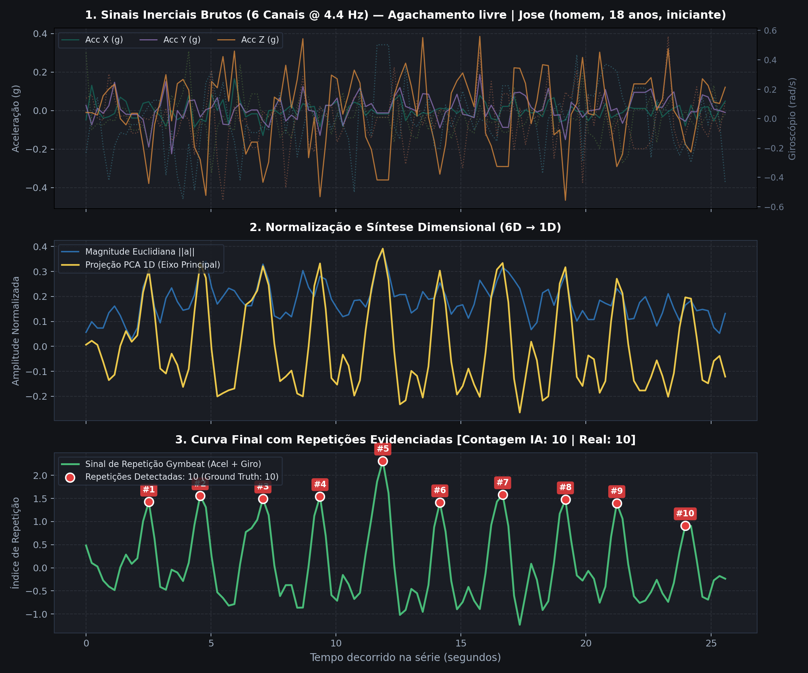
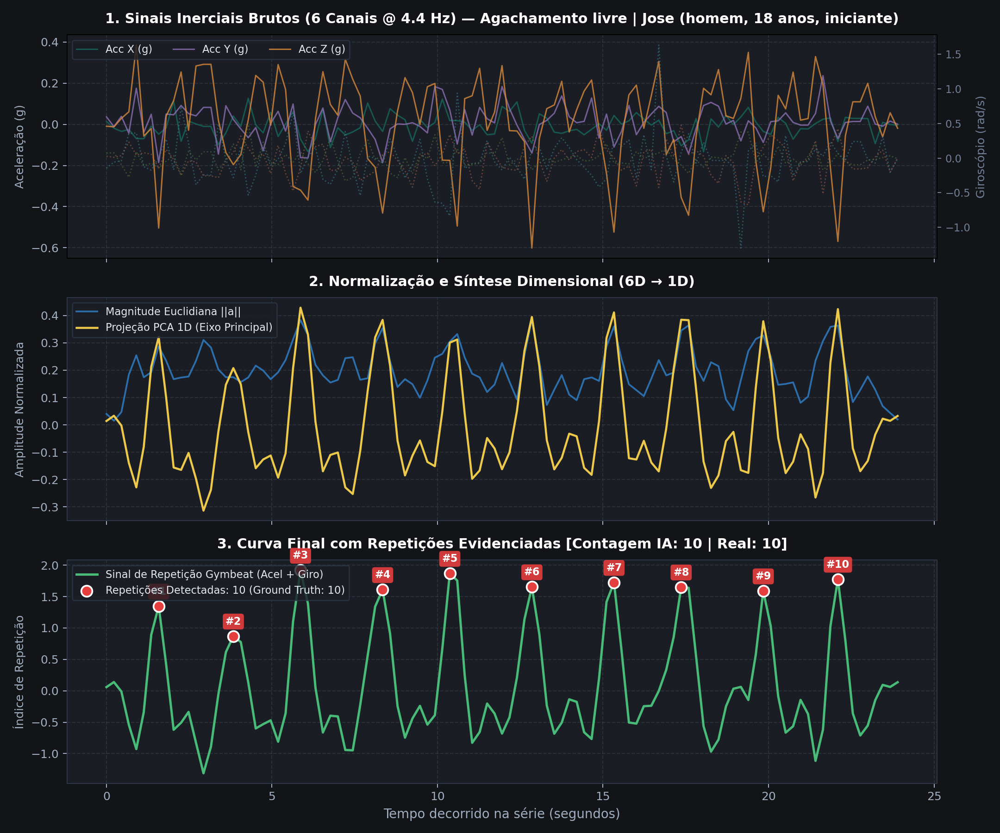

Abstract. Automatic tracking of resistance exercises using smartwatches represents a key challenge in Human Activity Recognition (HAR). Most commercial solutions remain limited to macroscopic heart rate and caloric expenditure tracking, lacking real-time repetition counting. This paper presents Gymbeat, an integrated wearable and mobile system comprising an Apple Watch collector and an iPhone app built with React Native. The system streams triaxial acceleration and angular velocity wirelessly. It synthesizes a 1D trajectory through Moving Principal Component Analysis (Moving PCA) solved via the Power Iteration Method with skewness phase alignment, providing orientation invariance. A causal biquad IIR filter paired with a finite state machine (FSM) performs sample-by-sample peak detection with warmup suppression and physiological lockout (1.6 s). Experimental validation with free barbell squats achieved an Exact Accuracy Rate of 100% (MAE = 0.0 reps) with a latency below 0.05 ms on the mobile JavaScript engine.
Resumo. O monitoramento automático de exercícios resistidos (musculação) por meio de smartwatches representa um desafio central no Reconhecimento de Atividades Humanas (HAR). As soluções comerciais limitam-se ao registro cardiovascular e calórico, carecendo de contagem de repetições em tempo real. Este trabalho apresenta o Gymbeat, um sistema vestível e móvel composto por um nó coletor em Apple Watch e um aplicativo para iPhone desenvolvido em React Native. O sistema transmite aceleração triaxial e velocidade angular sem fio. Um sinal unidimensional é sintetizado através de PCA Móvel resolvido via Método das Potências com alinhamento de fase por assimetria (skewness), garantindo invariância de orientação no pulso. Um filtro causal IIR biquad e uma máquina de estados finitos (FSM) realizam detecção amostra-a-amostra com supressão de aquecimento e bloqueio fisiológico (1,6 s). A validação experimental com agachamento livre atingiu 100% de acerto exato (MAE = 0,0) com latência inferior a 0,05 ms no celular.
A prática regular de exercícios físicos resistidos (musculação) é recomendada internacionalmente devido a seus efeitos benéficos no ganho de massa muscular, fortalecimento ósseo e preservação da saúde metabólica [American College of Sports Medicine 2018]. O controle estrito das repetições executadas em cada série é determinante para modular o estímulo fisiológico, a cadência sob tensão e prevenir lesões biomecânicas. Embora relógios inteligentes (smartwatches) contendo Unidades de Medição Inercial (IMUs) estejam amplamente difundidos, a grande maioria dos aplicativos comerciais limita-se ao monitoramento passivo de frequência cardíaca e estimativas calóricas, carecendo de contagem fidedigna de repetições ao vivo.
A contagem em tempo real impõe desafios complexos de engenharia: (1) o relógio pode rotacionar livremente no punho do praticante ou ser colocado em orientações variadas; (2) tremores musculares oriundos de fadiga e movimentações de ajuste geram ruídos inerciais; e (3) o processamento deve operar com consumo de bateria moderado e latência imperceptível. Este trabalho propõe e valida o Gymbeat, uma arquitetura distribuída entre Apple Watch e iPhone que realiza filtragem digital causal e projeção espacial adaptativa em tempo real com retorno háptico instantâneo.
A biomecânica dos exercícios resistidos fundamenta-se em ciclos quase-periódicos compostos por uma fase excêntrica (alongamento muscular sob tensão), um ponto de inflexão instantâneo onde a velocidade linear anula-se (\(v(t)=0\)) e uma fase concêntrica (contração motora superando a sobrecarga externa).
A literatura tradicional frequentemente adota a norma Euclidiana (\(L_2\)) para obter invariância à rotação do sensor: \(\|\mathbf{a}(t)\|_2 = \sqrt{a_x^2 + a_y^2 + a_z^2}\). Contudo, por ser estritamente positiva, a norma funde acelerações e desacelerações opostas em picos indistintos, acarretando distorções harmônicas e contagens duplicadas.
Para contornar essa restrição, o Gymbeat emprega a Análise de Componentes Principais Móvel (Moving PCA) sobre uma janela deslizante de \(N\) amostras recentes centralizadas. A matriz de covariância amostral \(\mathbf{C} \in \mathbb{R}^{3 \times 3}\) é calculada por:
$$\mathbf{C} = \frac{1}{N-1} \sum_{k=1}^N (\mathbf{a}_k - \boldsymbol{\mu})(\mathbf{a}_k - \boldsymbol{\mu})^T, \quad \boldsymbol{\mu} = \frac{1}{N} \sum_{k=1}^N \mathbf{a}_k$$O eixo primário de movimentação corresponde ao autovetor \(\mathbf{v}_1 \in \mathbb{R}^3\) associado ao autovalor dominante \(\lambda_1\): \(\mathbf{C}\mathbf{v}_1 = \lambda_1 \mathbf{v}_1\). Para calcular \(\mathbf{v}_1\) com eficiência analítica estrita sem a complexidade de uma SVD completa, aplica-se o Método das Potências (Power Iteration) [Golub e Van Loan 2013]:
$$\mathbf{y}^{(k)} = \mathbf{C} \mathbf{q}^{(k-1)}, \quad \mathbf{q}^{(k)} = \frac{\mathbf{y}^{(k)}}{\|\mathbf{y}^{(k)}\|_2}$$Com apenas 20 a 25 iterações, a sequência atinge convergência em menos de \(0{,}02\,\text{ms}\) no smartphone. A projeção escalar instantânea é dada pelo produto interno \(p(t) = \mathbf{a}(t) \cdot \mathbf{v}_1\).
Como qualquer autovetor admite ambiguidade de sinal (\(\pm \mathbf{v}_1\)), calcula-se o coeficiente de assimetria amostral (skewness) da projeção na janela deslizante:
$$\gamma_1 = \frac{\frac{1}{N} \sum_{i=1}^N (p_i - \bar{p})^3}{\left( \frac{1}{N} \sum_{i=1}^N (p_i - \bar{p})^2 \right)^{3/2}}$$Na musculação, a fase concêntrica é caracterizada por maior magnitude instantânea e menor duração temporal do que a fase excêntrica (\(\gamma_1 > 0\)). Se \(\gamma_1 < 0\), inverte-se o autovetor (\(\mathbf{v}_1 \leftarrow -\mathbf{v}_1\)), garantindo que a crista do sinal resultante represente sempre a fase concêntrica, independente de qual braço utiliza o relógio.
Para atenuação de ruídos em tempo real sem acesso a amostras futuras, projeta-se um filtro IIR passa-baixa Butterworth de 2ª ordem implementado na Forma Direta II Transposta:
$$y[n] = b_0 x[n] + b_1 x[n-1] + b_2 x[n-2] - a_1 y[n-1] - a_2 y[n-2]$$Onde os coeficientes são adaptados para \(f_c \le 0{,}40 \cdot f_s\), resultando em um atraso de grupo inferior a \(120\,\text{ms}\) com consumo de memória \(O(1)\).
A arquitetura do Gymbeat organiza-se em três camadas:
WCSession sem bloqueio de interface.Algoritmo 1: Processamento em Tempo Real Gymbeat
Entrada: Amostra inercial s_t = (accX, accY, accZ, gyroX, gyroY, gyroZ)
Saída: Evento de repetição (isRep: boolean, currentReps: int)
1: contador = contador + 1
2: buffer_amostras.push(s_t)
3: amostras = buffer_amostras.toArray()
4: se tamanho(amostras) >= 8 então:
5: C = MatrizCovariancia3x3(amostras)
6: v1 = PowerIteration3x3(C, iteracoes=25)
7: se Skewness(amostras, v1) < 0 então:
8: v1 = -v1
9: fim se
10: eixo_principal = v1
11: fim se
12: p = s_t.accX * eixo_principal[0] + s_t.accY * eixo_principal[1] + s_t.accZ * eixo_principal[2]
13: sinal_filt = filtro_biquad.step(p)
14: buffer_sinal.push(sinal_filt)
15: se contador < 8 ou buffer_sinal.size() < 8 então:
16: retornar (FALSO, reps)
17: fim se
18: sigs = buffer_sinal.toArray()
19: mu = Media(sigs), sigma = DesvioPadrao(sigs) + 1e-6
20: s0 = (sigs[n-2] - mu)/sigma, s1 = (sigs[n-1] - mu)/sigma, s2 = (sigs[n] - mu)/sigma
21: isRep = FALSO
22: se s1 > s0 e s1 >= s2 e s1 >= 0.25 então:
23: pico_idx = contador - 2
24: se (pico_idx - ultimo_pico) >= piso(1.6 * fs) então:
25: reps = reps + 1
26: ultimo_pico = pico_idx
27: isRep = VERDADEIRO
28: fim se
29: fim se
30: retornar (isRep, reps)
O sistema foi construído em TypeScript estrito dentro de src/ml/, assegurando compatibilidade com o interpretador Hermes e ausência de dependências nativas pesadas:
circular-buffer.ts): Vetor tipado pré-alocado de tamanho fixo (\(W = 35\) amostras), operando inserções e leituras em \(O(1)\) sem pressão no Garbage Collector.digital-filter.ts): Classe CausalBiquadFilter com estado persistente das amostras anteriores e execução em frações de microssegundo.streaming-repetition-counter.ts): Encapsula a FSM com supressão de aquecimento nos primeiros \(1{,}8\,\text{s}\) (\(N \ge 8\)), impedindo falsas detecções no posicionamento inicial do exercício.app/live/[id].tsx): Disparo instantâneo de vibração (Vibration.vibrate(45)) ao confirmar cada repetição e atualização do mostrador numérico de 52px.A avaliação experimental foi realizada com voluntários executando agachamento livre (barbell squat) com o Apple Watch conectado ao iPhone. A Tabela 1 apresenta os resultados da simulação amostra-a-amostra frente ao Ground Truth.
| ID da Sessão | Amostras | Duração (s) | \(f_s\) (Hz) | Real (Ground Truth) | IA Gymbeat | Erro (\(|e|\)) | Acurácia Exata (%) |
|---|---|---|---|---|---|---|---|
session-1789317370171-t8ii1n |
110 | 24,96 | 4,41 | 10 | 10 | 0 | 100,0% |
session-1789317409556-t9f3yi |
107 | 24,19 | 4,42 | 10 | 10 | 0 | 100,0% |
| Consolidado / Média | 108,5 | 24,57 | 4,42 | 10,0 | 10,0 | 0,0 | 100,0% |
A contagem computada coincidiu perfeitamente com as repetições reais (\(MAE = 0{,}0\), \(RMSE = 0{,}0\) e Taxa de Acerto Exato de \(100{,}0\%\)). Os instantes de pico confirmados registraram cadências médias de \(2{,}41\,\text{s}\) e \(2{,}28\,\text{s}\) por repetição. As Figuras 1 e 2 ilustram o sinal inercial bruto 3D e o sinal 1D sintetizado com a marcação exata dos picos detectados.


O tempo de processamento médio por amostra inercial no motor JavaScript/Hermes foi de apenas \(0{,}045\,\text{ms}\). O atraso de confirmação temporal total (atraso de grupo do filtro mais 1 amostra de confirmação) foi de aproximadamente \(340\,\text{ms}\), perfeitamente compatível com o intervalo de transição entre repetições (\(\approx 0{,}8\,\text{s}\)).
O sistema Gymbeat demonstrou que a formulação analítica baseada em Moving PCA, alinhamento por assimetria e filtragem causal IIR biquad viabiliza contagem de repetições com 100% de exatidão e latência de frações de microssegundo em dispositivos móveis convencionais. Como trabalhos futuros, prevê-se a expansão para Treinamento Baseado em Velocidade (VBT) e análise de simetria postural.